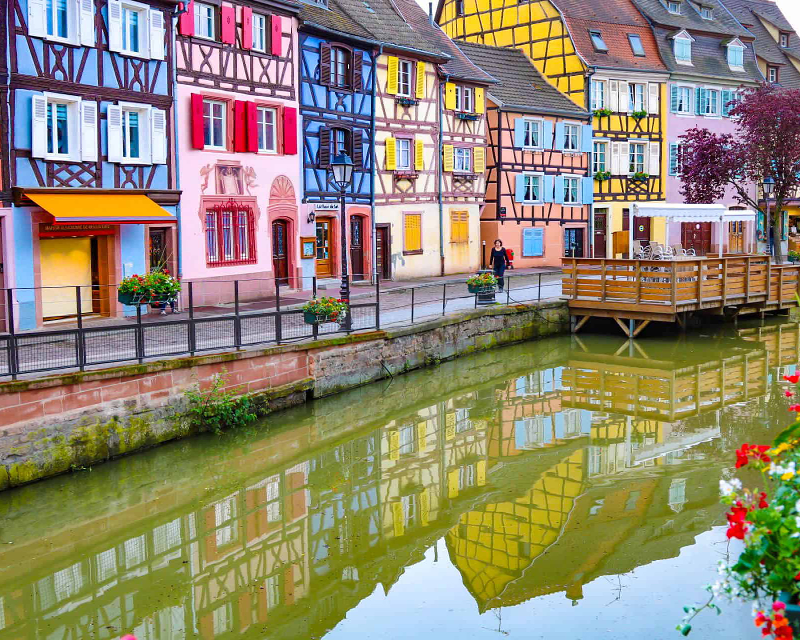

1. Rothenburg ob der Tauber, Germany

📍 Overview
- Often called Germany's most "Christmasy" town. It is a preserved medieval walled city that feels like a real-life holiday card.
- Home to the famous "Reiterlesmarkt" (Rider's Market) which has a history dating back to the 15th century.
🎄 Christmas Magic
- Käthe Wohlfahrt’s Christmas Village: A world-famous shop that is Christmas 365 days a year. It features a massive white tree inside and the German Christmas Museum.
- Town Hall Tower: Climb the tower in winter for a stunning view of the snowy roofs and market lights.
- Night Watchman Tour: A legendary tour at 8:00 PM where a cloaked watchman tells medieval stories.
🌭 What to Eat
- Schneeballen (Snowballs): Strips of fried dough covered in powdered sugar or chocolate.
- White Mulled Wine: A local Franconian specialty, distinct from the usual red glühwein.
🚆 Getting There
- Take a train to Steinach, then transfer to the local train to Rothenburg.
2. Colmar, France
📍 Overview
- Located in the Alsace region, Colmar is known as "Little Venice" due to its canals.
- The town looks like the setting for Beauty and the Beast, with colorful timber-framed houses.
🎄 Christmas Magic
- 6 Christmas Markets: Unlike other cities, Colmar has six different themed markets nestled within the old town, including a children's market and an indoor craft market.
- Illuminations: The canals are lit up with magical lights, reflecting off the water at night.
- Children's Choir: Often performs on boats floating down the canals.
🌭 What to Eat
- Mannele: Little brioche men baked for St. Nicholas Day.
- Kugelhopf: A bundt-style cake with raisins and almonds.
- Vin Chaud Blanc: Hot white wine with spices (cinnamon, orange).
🚆 Getting There
- Direct TGV trains from Paris take about 2.5 hours. It is also close to the German border.
3. Hallstatt, Austria

📍 Overview
- A UNESCO World Heritage village nestled between a giant lake and towering Alps.
- It is much quieter and more peaceful than big city markets, perfect for a romantic escape.
🎄 Christmas Magic
- The Market Square: Features a life-size wooden nativity scene and traditional Austrian brass music.
- Silence and Snow: The real attraction is the silence of the snow-covered mountains reflecting on the dark lake.
- Processions: Look out for the "Krampus Run" in early December (a folklore tradition).
🌭 What to Eat
- Bratkartoffeln: Roasted potatoes often served at the market.
- Christmas Cookies: Austrian "Vanillekipferl" (vanilla crescents) are legendary here.
🚆 Getting There
- Take a train to Hallstatt station, then catch the iconic ferry across the lake to reach the village.
4. Rovaniemi, Finland

📍 Overview
- Located in the Arctic Circle in Lapland, this is the Official Hometown of Santa Claus.
- It is a winter wonderland with deep snow, reindeer, and frozen landscapes.
🎄 Christmas Magic
- Santa Claus Village: You can meet the "real" Santa in his office every day of the year.
- Santa's Post Office: Send a letter with the official Arctic Circle postmark.
- Northern Lights: If you are lucky, you can see the Aurora Borealis dancing over the Christmas village.
🌭 What to Activities
- Reindeer sleigh rides (just like Santa!).
- Husky safaris through the snowy forests.
- Crossing the Arctic Circle line (marked with lanterns).
🚆 Getting There
- Fly directly to Rovaniemi Airport or take the famous "Santa Claus Express" night train from Helsinki.
5. Bruges, Belgium

📍 Overview
- Known as the "Venice of the North," Bruges is a medieval masterpiece with cobbled streets and canals.
- During Christmas, the city hosts the "Winter Glow" festival.
🎄 Christmas Magic
- Light Trail: The city sets up an artistic light trail that highlights historic buildings and canals.
- Ice Skating: A romantic floating ice rink is usually set up on the Minnewater (Lake of Love).
- Market Square (Grote Markt): Surrounded by gingerbread-like houses and the massive Belfry tower.
🌭 What to Eat
- Belgian Waffles: The thick, warm Liège waffles are best eaten on the street.
- Hot Chocolate: Bruges is famous for chocolate; try a cup made with real melted chocolate drops.
🚆 Getting There
- Easy 1-hour train ride from Brussels. The station is a short walk from the historic center.
6. Quebec City, Canada

📍 Overview
- The only walled city north of Mexico. It feels incredibly European, like a slice of France in North America.
- The "Vieux-Québec" (Old Quebec) district is a UNESCO World Heritage site.
🎄 Christmas Magic
- German Christmas Market: Quebec recreates a traditional European market in the heart of the city.
- Rue du Petit-Champlain: Voted one of the most beautiful streets in the world, especially when covered in snow and lights.
- Château Frontenac: The massive castle-hotel dominates the skyline and has a famous toboggan slide open in winter.
🌭 What to Eat
- Poutine: Fries with gravy and cheese curds (a warm comfort food).
- Maple Taffy: Hot maple syrup poured onto fresh snow and rolled onto a stick.
🚆 Getting There
- Fly into YQB Airport or drive 3 hours from Montreal.
7. Leavenworth, Washington, USA

📍 Overview
- A unique Bavarian-styled village nestled in the Cascade Mountains of Washington State.
- The entire town remodeled itself in the 1960s to look like a German village.
🎄 Christmas Magic
- Village of Lights: The town is illuminated with over half a million Christmas lights from Thanksgiving through February.
- Nutcracker Museum: Home to thousands of nutcrackers, perfect for the holiday spirit.
- Caroling: Strolling carolers and alphorn players often fill the streets.
🌭 What to Eat
- Bratwurst & Pretzels: Authentic German food is served everywhere.
- Gingerbread (Lebkuchen): Freshly baked from local bakeries.
🚆 Getting There
- A 2.5-hour scenic drive from Seattle, or take the Amtrak "Empire Builder" train which stops near the town.
8. Zermatt, Switzerland

📍 Overview
- A car-free luxury alpine village located at the foot of the iconic Matterhorn mountain.
- It offers guaranteed snow and a high-end, cozy atmosphere.
🎄 Christmas Magic
- Horse-Drawn Carriages: Since there are no cars, you travel by electric taxi or horse carriage with sleigh bells.
- The Tree: A giant Christmas tree is set up in front of the Mont Cervin Palace hotel.
- Wolli the Sheep: The town mascot often meets children during the holidays.
🌭 What to Eat
- Cheese Fondue: The ultimate winter meal to share in a warm wooden chalet.
- Swiss Chocolate: Visit the Lindt shop or local chocolatiers.
🚆 Getting There
- Access is by train only. Take the scenic Glacier Express or a regional train to Zermatt station.
9. Tokyo Disneyland, Japan

📍 Overview
- While not a traditional town, the "World Bazaar" area transforms into a Victorian Christmas village.
- Japanese attention to detail makes the decorations and food spectacular.
🎄 Christmas Magic
- Disney Christmas Stories Parade: Features floats with Mickey and friends in winter gear.
- World Bazaar Tree: A 15-meter tall Christmas tree acts as the centerpiece, with music and light shows at night.
- Haunted Mansion Holiday: The ride is overlaid with The Nightmare Before Christmas theme.
🌭 What to Eat
- Chocolate Churros: A seasonal favorite dusted with "snow" sugar.
- Christmas Pizza: Often shaped like a tree or wreath.
🚆 Getting There
- Take the train (JR Keiyo Line) from Tokyo Station to Maihama Station (about 15 minutes).
10. Strasbourg, France

📍 Overview
- Proudly holds the title "Capitale de Noël" (Capital of Christmas).
- Home to the oldest Christmas market in France, the "Christkindelsmärik," founded in 1570.
🎄 Christmas Magic
- Place Kléber: The site of the "Great Christmas Tree," a real tree from the Vosges mountains that towers over the square.
- Cathedral Square: The market stalls cluster around the massive Gothic cathedral, creating a dramatic backdrop.
- La Petite France: A historic quarter with half-timbered houses that looks stunning under Christmas lights.
🌭 What to Eat
- Bredele: Traditional Alsatian Christmas biscuits in various shapes and flavors (anise, cinnamon).
- Choucroute: Sauerkraut served with sausages and potatoes (heavy winter food).
🚆 Getting There
- High-speed TGV trains connect Paris to Strasbourg in under 2 hours.
1. Rothenburg ob der Tauber, Germany
📍 Overview
- Often called Germany's most "Christmasy" town. It is a preserved medieval walled city that feels like a real-life holiday card.
- Home to the famous "Reiterlesmarkt" (Rider's Market) which has a history dating back to the 15th century.
🎄 Christmas Magic
- Käthe Wohlfahrt’s Christmas Village: A world-famous shop that is Christmas 365 days a year. It features a massive white tree inside and the German Christmas Museum.
- Town Hall Tower: Climb the tower in winter for a stunning view of the snowy roofs and market lights.
- Night Watchman Tour: A legendary tour at 8:00 PM where a cloaked watchman tells medieval stories.
🌭 What to Eat
- Schneeballen (Snowballs): Strips of fried dough covered in powdered sugar or chocolate.
- White Mulled Wine: A local Franconian specialty, distinct from the usual red glühwein.
🚆 Getting There
- Take a train to Steinach, then transfer to the local train to Rothenburg.